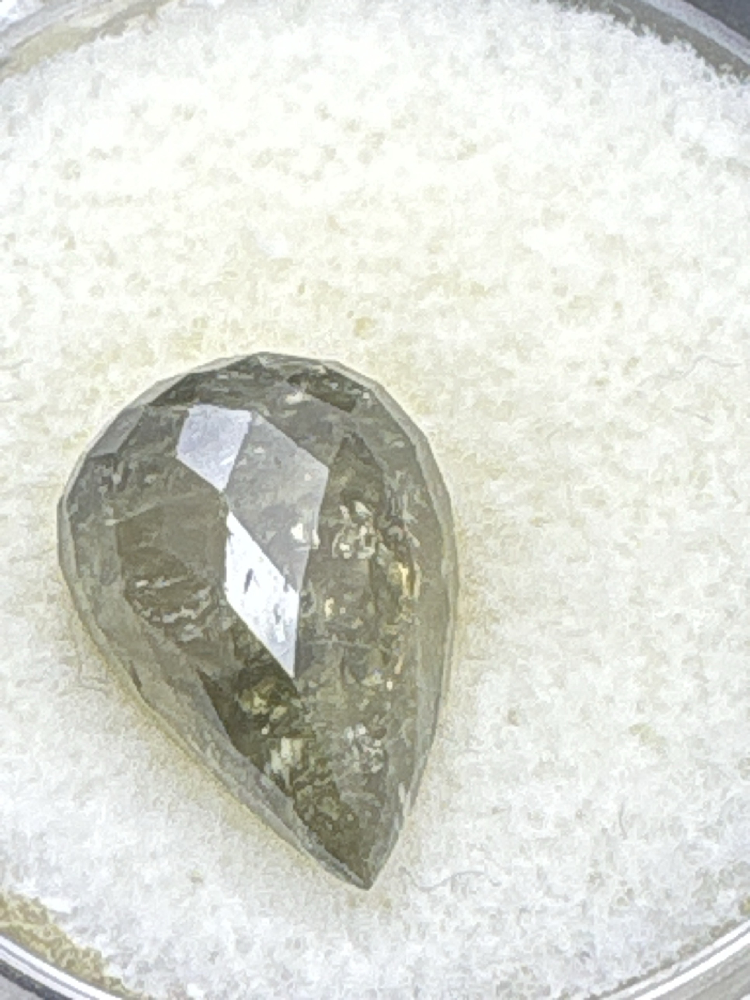

The Gem Drawer › No. 128

A translucent grey-smoky pear with visible feathers throughout.
| Catalogue no. | #128 |
|---|---|
| As labeled | UNIDENTIFIED - grayish/smoky pear-cut stone, heavily included (no label; visual ID only - see notes) |
| Shape / cut | Pear / teardrop |
| Weight | Not recorded |
| Measurements | Not recorded |
| Colour | Grayish / smoky, translucent |
| Clarity / condition | Heavily included - numerous visible feathers/inclusions throughout; not professionally graded |